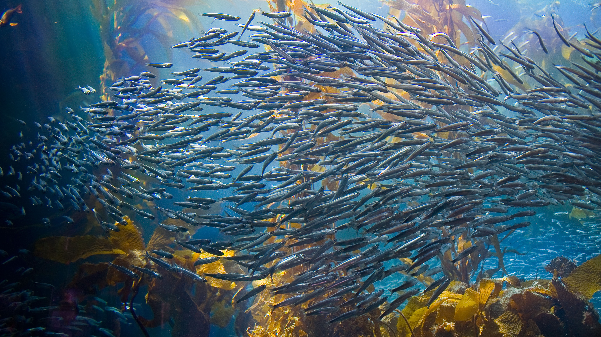

KELP THE ENVIRONMENT
Kelp farming helps detoxify ocean systems.
CLEANER OCEANS
Fertilizer runoff overwhelms marine ecosystems; depleting oxygen and spurring the accumulation of nitrate-nitrogen in our waters. Kelp helps mitigate these hazards.

INNOVATIVE AQUACULTURE
3D ocean farming utilizes the entire coastal water column - a more efficient use of marine real estate. Kelp can be grown alongside shellfish and other sea vegetables. Kelp provides food and shelter for many marine species including tilefish, flounder and scallops.
